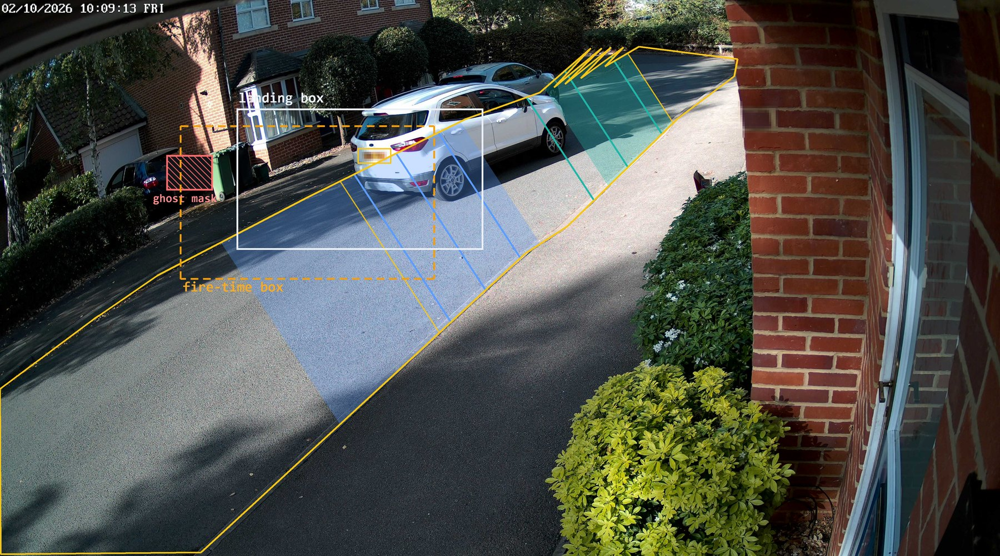

What the system has done so far
Totals across the 49 sessions pulled to the dev box. Session totals come from the control panel's inventory; traffic and people figures from the showcase /stats and /people pages.
Three places: the street, the dev box, and outside services
Select any box to open its pop-up. The Orin runs the live tracker around the clock. The dev box pulls each session's 4K snapshots and JSON over SSH and does all the heavy analysis on its RTX 3080. Nothing leaves the house except DVSA lookups and code pushes.
Four devices, one fixed view
The camera's position is fixed and any extra camera would have to be discreet, so capture improvements come from timing, cropping and exposure rather than more hardware. Product photos are the makers' images, not this install.
From RTSP frame to finalized track
One asyncio process (device/runtime.py) under systemd. The blocking frame reader runs in a thread, YOLO inference in an executor, HTTP through aiohttp. A track becomes a TrackRecord line in events.jsonl the moment it ends.

Fire time vs landing, one track
Each 4K snap fires from the sub-stream box, then lands about 0.65 s later. Position along the road (t, 0 = far end), per snap. The car is leaving, so t falls.
- fire-time box centre (what the planner saw)
- landing box centre (where the car was)
- L→R pipeline band, t 0.30–0.60
Plates, labels, vehicles, people
The control panel chains these as playbooks. GPU work runs one job at a time in the GPU lane; pulls and DVSA calls run in the net lane alongside it. Each step reads and writes sidecar JSON next to the session, so any step can be re-run alone.
The DVSA labels the street's own cars, and the street trains the models
Plate reads that pass the gate get DVSA make, model and colour. Those labels turn the cars' own 4K crops into a UK training set, so the classifiers can name the cars whose plates were never read.
| Model | Architecture | Classes | Trained on | Promoted | Fresh cars | Known cars, new passes |
|---|---|---|---|---|---|---|
| ML-5a Make | EfficientNet-B6 @528 | 62 makes | uk_crops_0929_576 · 4,347 cars · 76,033 crops | 2026-10-01 | 85.0 % +4.2 | 95.1 % +1.5 |
| ML-5b Colour | EfficientNet-B0 @384 | 11 colours | same corpus · 4,346 cars | 2026-10-03 | 83.3 % +7.1 | 93.5 % +6.6 |
| ML-5c Body type | EfficientNet-B0 @384 | 7 shapes | same corpus · 4,086 cars | 2026-10-03 | 89.1 % +1.3 | 95.9 % +3.1 |
| ML-5d Plate detector | YOLOv9-t 640 end2end (ONNX) | plate | pre-trained, open-image-models 0.5.1 | default 2026-05-25 | — | — |
| ML-5e Plate OCR | global-plates-mobile-vit-v2 (ONNX) | characters | pre-trained, fast-plate-ocr 1.1.0 | — | — | — |
| ML-5f Detector + tracker | YOLOv8m · TensorRT FP16 @640 (Orin); @1920 offline | 7 COCO classes live | COCO pre-trained | 2026-05-21 engine | — | — |
Per-track accuracy on the unseen sessions session_20260924_104939 + session_20260930_211033. "Fresh cars" are cars in no training corpus (117 / 118 / 109); "known cars" are every labelled car, scored only on passes recorded after all training data (710 / 711 / 674). Deltas are percentage points against the model each one replaced.
Validation make@1 by training run
Each point is scored on its own validation split, so heights aren't comparable across runs. The jump at 24 Sep is the crop fix: earlier runs trained and validated on crops that mostly missed the car. The trustworthy comparisons are the head-to-heads in the pop-ups.
Files, not a database
Every stage writes plain JSON or JPEG next to the session it came from. That makes each step restartable and lets the websites rebuild their views from disk. The Orin keeps 4K stills for 7 days; the dev box keeps everything, which is why pulls have a deadline.
| Per-session file | Written by | Read by | Format | Size, 62.7 h session | Kept |
|---|
Sizes from session_20261001_190826 (62.7 h, 2,719 kept tracks, 9,049 4K stills). Field lists for TrackRecord and SessionMeta are in ST-2.
Four local websites
All four are aiohttp + Jinja2 with dependency-free SVG charts. Screenshots were captured on 5 Oct 2026 with plates and personal tags blocked out (yellow bars) and plates inside photos pixelated.
Numbers worth arguing about
Each figure names its source and date. "Canonical" means the read matches a UK plate format; a canonical read isn't proof the plate belongs to the tracked car (see EN-5).
Locked decisions and disproved beliefs
The project has a habit of measuring its own claims. These are the choices that are settled, and the confident findings that later measurement overturned.
Locked
Disproved or superseded
Every named library, tool and technique
Versions are the ones pinned in uv.lock or read off the devices on 5 Oct 2026. Select a row to open the component that uses it.
| Name | Version | Role here | Used by |
|---|